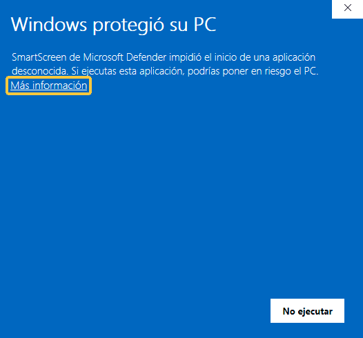
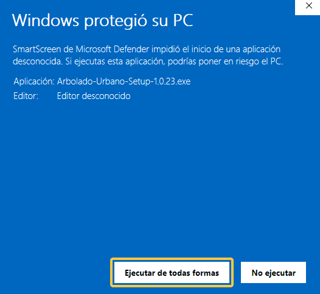
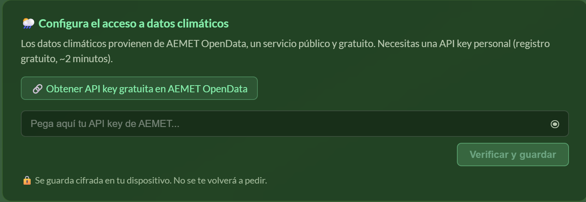
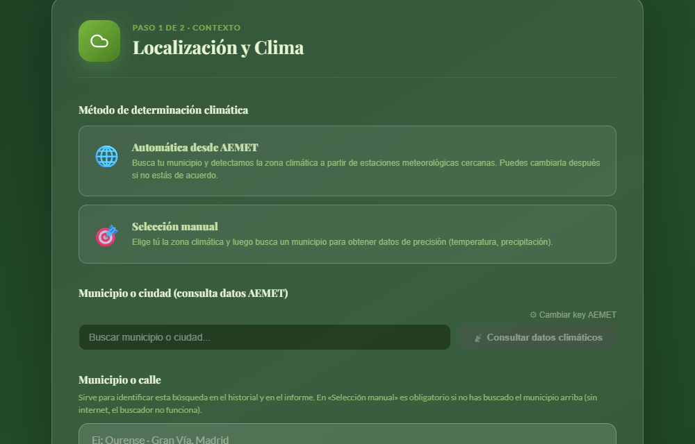

Descarga Arbolado Urbano
La aplicación de SDL para elegir el arbolado adecuado a cada calle, con el clima real de tu municipio. Para técnicos municipales.
Desde este dispositivo no se puede instalar. Arbolado Urbano se instala en un ordenador con Windows: reenvíate este enlace por correo y ábrelo allí.
¿Estás en un ordenador con Windows? Descárgala aquí.
- Versión
- cargando
- Tamaño
- cargando
- Sistema
- Windows 10 y 11 (64 bits)
No se ha podido leer la versión más reciente. El botón lleva a la página de descargas de GitHub: allí, pulsa el archivo que termina en .exe.
Antes de empezar necesitas
- Una clave de activación. Te la facilita SDL.
- Internet al activar (unos segundos, la primera vez que abres la aplicación) y, después, abrirla con internet una vez por semana: basta con abrirla, sin volver a escribir la clave.
- Para el clima automático, una clave gratuita de AEMET. La aplicación te lleva a pedirla (cómo se pide); son unos minutos. Sin ella, el clima se puede escribir a mano.
Instalación, paso a paso
-
Descarga el instalador.
Pulsa «Descargar para Windows». Se guarda en tu carpeta de Descargas como
Arbolado-Urbano-Setup-(versión).exe.Si el navegador avisa de que el archivo «no se descarga habitualmente»: en Edge, pulsa los tres puntos (···) junto al aviso y elige Conservar; en Chrome, pulsa Conservar.
-
Ábrelo. Windows mostrará un aviso azul.
Aparece la ventana «Windows protegió su PC». Pulsa Más información y después Ejecutar de todas formas.
Es normal: sale porque el instalador no lleva un certificado de firma comercial, no porque tenga ningún problema. Si tu equipo no te deja continuar, pasa a tu departamento de informática el apartado del final de esta página.


Si en lugar de esa ventana sale «Advertencia de seguridad» con «Editor: Publicador desconocido» (pasa en equipos que tienen desactivado ese filtro de Windows), pulsa Ejecutar.
-
Elige «Solo para mí».
El instalador pregunta para quién instalar. Con Solo para mí no hace falta ser administrador del equipo. Pulsa Siguiente, deja la carpeta que propone y pulsa Instalar. Al acabar, pulsa Terminar; se crea un acceso directo en el escritorio.
-
Activa la aplicación.
Al abrirla por primera vez te pide la clave. Escríbela tal como te la dio SDL (tiene la forma ARB-XXXXX-XXXXX-XXXXX), comprueba que tienes internet y pulsa Activar. Listo.
Para el clima automático, la primera búsqueda te pide además una clave de AEMET. Pulsa Obtener API key gratuita en AEMET OpenData: se abre la web de AEMET, escribes tu correo y te llega la clave. Pégala en la aplicación y pulsa Verificar y guardar. Solo se pide una vez.

Sobre la clave
- Es para un ordenador. La clave queda ligada al equipo donde la activas. Si cambias de ordenador, pide a SDL que libere tu clave y actívala en el nuevo: es la misma clave.
- Después funciona sin internet. No tendrás que volver a escribir la clave: basta con abrir la aplicación con internet una vez por semana, y ella sola comprueba la clave y recibe las actualizaciones.
- Si pasa más tiempo sin conexión, primero avisa («Reconecta a internet para revalidar tu licencia») y, pasados 14 días, vuelve a pedir la clave: escribe la misma, con internet, y sigue como estaba.
Qué hace
Partiendo del clima real de tu municipio (datos de AEMET) y de las condiciones de la calle (ancho de acera, espacio para la copa, suelo), la aplicación propone las especies adecuadas y genera un informe en PDF listo para adjuntar al expediente.
Para cada especie puedes ver su ficha, compararla con otras y comprobar cómo se comportaría con el clima de las próximas décadas, cómo crecerá en 30 años y qué riesgos puede dar en esa calle.
Cada consulta queda guardada en el historial, para retomarla o volver a sacar el informe cuando lo necesites.

Ejemplo: una calle de Madrid
- Calle
- Acera de 4 a 6 m, marco de plantación de 6 a 8 m, a pleno sol, suelo arcilloso
- Clima
- Madrid, estación de El Retiro (AEMET): 15,4 °C de media y 417 mm de lluvia al año
- Cabe
- Copa media
- Descarta
- Las especies de otro tamaño de copa y las que no aguantan el clima mediterráneo
- Propone
-
- Pyrus calleryana ‘Chanticleer’ (peral de flor) 88 / 100
- Prunus cerasifera ‘Nigra’ (ciruelo de jardín) 86 / 100
- Lagerstroemia indica (árbol de Júpiter) 84 / 100
La nota de 0 a 100 combina cuatro cosas: cómo aguantará el clima de las próximas décadas, el mantenimiento que pide, la sombra y el CO2 que aporta y los problemas que puede dar.
Confianza
- Quién está detrás. Arbolado Urbano es una aplicación de SDL. Para soporte y claves, contacta con SDL.
- Tu trabajo se queda en tu equipo. Las recomendaciones, los informes y tu historial se calculan y guardan en tu ordenador. Para funcionar, la aplicación consulta servicios externos (el clima de AEMET, el mapa y el buscador de municipios de OpenStreetMap, las fotos de las fichas y la comprobación de la clave); aparte de eso, solo envía, de forma anónima, informes de error y estadísticas de uso. Lo cuenta con detalle la política de privacidad.
- Se actualiza sola. Cuando hay versión nueva, la aplicación la descarga, comprueba que es auténtica y te avisa para instalarla.
Para el departamento de informática
Instalador NSIS de 64 bits para Windows 10/11. En modo «Solo para mí» se instala en el perfil del usuario, sin permisos de administrador. Usa la configuración de proxy de Windows. Necesita salida a internet a los destinos de abajo.
¿Por qué Windows avisa de «editor desconocido»?
El instalador no lleva un certificado de firma de código comercial. Lo que sí tiene:
- Solo se descarga desde GitHub, de las publicaciones oficiales del proyecto.
- Las actualizaciones van firmadas con una clave propia (Ed25519): la aplicación rechaza cualquier actualización que no lleve esa firma, aunque llegue desde el sitio correcto.
-
Huella SHA-256 de la versión …:
…Para comprobarla, en PowerShell, en la carpeta de Descargas:Get-FileHash .\Arbolado-Urbano-Setup-(versión).exe. El resultado tiene que ser idéntico. - Huella SHA-256: figura en las notas de cada versión, en la misma página de GitHub a la que lleva el botón de descarga. Para comprobarla, en PowerShell, en la carpeta de Descargas:
Get-FileHashseguido del nombre del instalador. El resultado tiene que ser el mismo; da igual que uno salga en mayúsculas y el otro en minúsculas.
Destinos de red
| Destino | Para qué | Cuándo | ¿Se puede bloquear? |
|---|---|---|---|
arbolado-license.arbolado-auth.workers.dev | Activar y revalidar la clave (envía la clave y un identificador técnico del equipo) | Al activar y, después, al abrirse, si la última comprobación tiene 7 días o más | No. Sin él no se activa, y a los 14 días sin validar la aplicación se bloquea |
github.com, release-assets.githubusercontent.com | Buscar y descargar actualizaciones | Al arrancar | Sí, pero deja de actualizarse |
*.ingest.de.sentry.io | Informes de error anónimos (UE) | Al abrir la aplicación (aviso anónimo de sesión) y si hay un fallo | Sí |
gateway.umami.is | Estadística de uso anónima, sin cookies (lista cerrada de eventos) | Al usar la aplicación (búsqueda, informe, función abierta) | Sí |
opendata.aemet.es | Datos climáticos | Al consultar el clima | Sí: el clima se puede escribir a mano |
nominatim.openstreetmap.org | Buscar el municipio por nombre | Al buscar un municipio | Sí: el municipio se puede escribir a mano |
*.tile.openstreetmap.org | Fondo del mapa de estaciones | Al ver el mapa | Sí: el mapa sale sin fondo |
images.unsplash.com | Foto de la especie en la ficha PDF | Al exportar una ficha | Sí: la ficha sale sin foto |
Requisitos
- Windows 10 u 11 de 64 bits.
- Sin permisos de administrador (modo «Solo para mí»). «Para todos los usuarios» sí los pide.
- Espacio en disco: unos 420 MB (se instala en
%LOCALAPPDATA%\Programs\Arbolado Urbano). - Proxy: usa la configuración de proxy de Windows para todas sus conexiones.
- Clave de AEMET OpenData para el clima automático: personal y gratuita, la pide cada técnico con su correo desde la propia aplicación. Se guarda cifrada en el equipo (con el cifrado de Windows) y solo se envía a
opendata.aemet.es. Sin ella, el clima se escribe a mano.